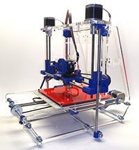

Realidad aumentada

La realidad aumentada (RA) es el término que se usa para definir una visión a través de un dispositivo tecnológico, directa o indirecta, de un entorno físico del mundo real, cuyos elementos se combinan con elementos virtuales para la creación de una realidad mixta en tiempo real. Consiste en un conjunto de dispositivos que añaden información virtual a la información física ya existente, es decir, añadir una parte sintética virtual a lo real. Esta es la principal diferencia con la reailidad virtual puesto que no sustituye la realidad fisica, sino que sobreimprime los datos informáticos al mundo real. Con la ayuda de la tecnología (por ejemplo, añadiendo la visión por computador y reconocimiento de objetos) la información sobre el mundo real alrededor del usuario se convierte en interactiva y digital. La información artificial sobre el medio ambiente y los objetos pueden ser almacenada y recuperada como una capa de información en la parte superior de la visión del mundo real.
La reaidad aumentada de investigación explora la aplicacón de imágenes generadas por ordenador en tiempo real a consecuencias como una forma de ampliar el mundo real. La investigación incluye el uso de pantallas colocadas en la cabeza,un display virtual colocado en la retina para mejorar la visualizacion, y la construcción de ambientes controlados a partir sensores y actuadores
Gamificación

La ludificación a vaces traducido cono gamicación, jueguetización o juguetización- es al uso do técnicas, elementos y dinámicas propias de los juegos y el osio en actividades no recreativas con el fin de potenciar la motivación, así como de reforzar la conducta para solucionar un problema u obtener un objetivo.
La ludificacion pretende introducir estructuras provenientes de los juegos para convertir una actividad a priori aburrida en otra actividad que motive a la persona a participar en ella, cono sería premiar con insignias ciertos logros a lo largo de la actividad.
si bien introducir valores lúdicos a estas actividades no es una idea nueva, se trata de un concepto que se ha visto magnificado en los ultimos años como consecuencia del auge del entorno digital, de los videojuegos y de estudios aplicados a estos, como la ludología
Impresión en 3D

La impresión 3D es un grupo de tecnologías de fabricación por adición donde un objeto tridimensional es creado mediante la superposición de capas sucesivas de material. Las impresoras 3D son por lo general más rápidas, más baratas y más fáciles de usar que otras tecnologías de fabricación por adición, aunque como cualquier proceso industrial, estarán sometidas a un compromiso entre su precio de adquisición y la tolerancia en las medidas de los objetos producidos. Las impresoras 3D ofrecen a los desarrolladores de producto, la capacidad para imprimir partes ymontajes hechas de diferentes materiales con diferentes propiedades fisicasy mecánicas, a menudo con un simple proceso de montaje. Las tecnologias avanzadas de impresión 3D, pueden incluso ofrecer modelos que pueden servir como prototipos de producto. Desde 2003 ha habido un gran crecimiento en la venta de impresoras 3D. De manera inversa, el coste de las mismas so ha reducido. Esta tecnologia también encuentra uso en los campos tales como joyería, calzado, diseño industial, arquitectura, ingeniería y construcción, automoción y sector aeroespacial industrias médicas, educación, sistemas de información geográfica, ingeniería civil y muchos otros.